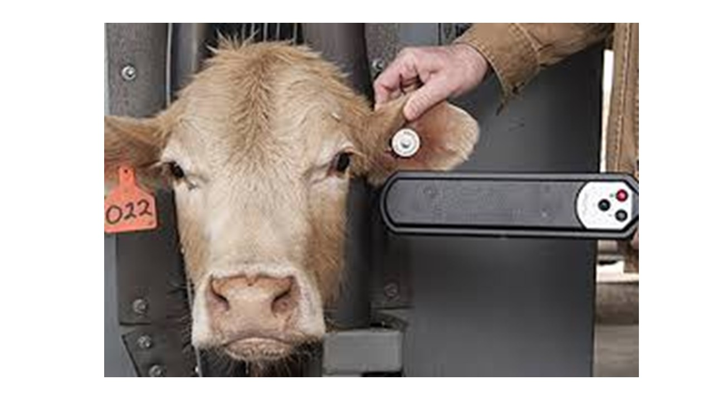
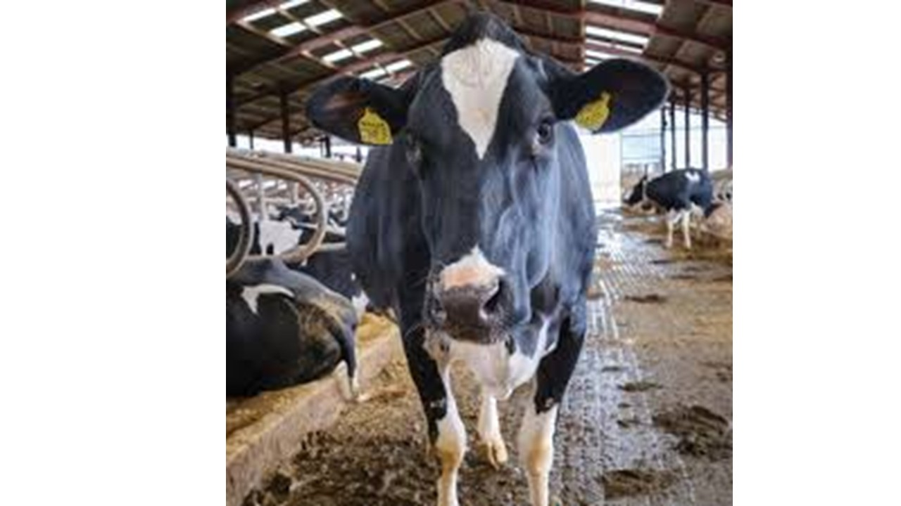
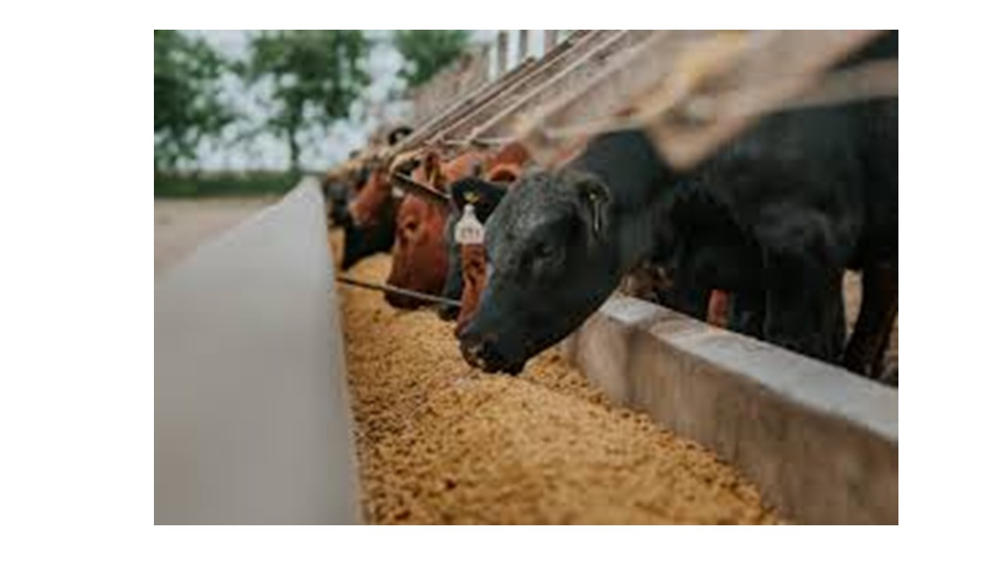
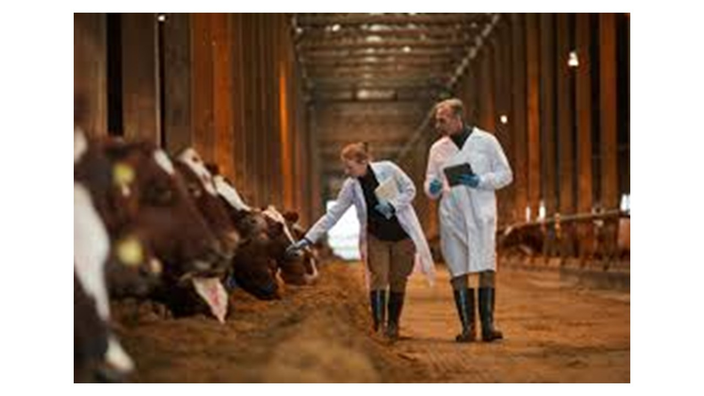

College of Agriculture Environment and Nutrition Science
AI Farms Project
Integrating Artificial Intelligence and Muzzle-based Biometric Identification for the Detection of Non-Feeding Behaviour in Feedlot Cattle
Enroll Your Animals
College of Agriculture Environment and Nutrition Science
Integrating Artificial Intelligence and Muzzle-based Biometric Identification for the Detection of Non-Feeding Behaviour in Feedlot Cattle
Enroll Your AnimalsAdvancing cattle welfare through cutting-edge AI and biometric technology
The AI Farms Project represents a breakthrough in livestock monitoring and animal welfare. By combining artificial intelligence with muzzle-based biometric identification, we can accurately detect non-feeding behaviour in feedlot cattle, enabling early intervention and improved health outcomes.
Each animal's muzzle pattern is unique, much like a human fingerprint. Our system uses high-resolution imaging and advanced machine learning algorithms to identify individual animals and monitor their feeding patterns continuously.

Farmers who enroll will have their animals cared for and fed for the entire duration of the project.

A simple, three-step process to monitor and protect your herd

High-resolution cameras capture each animal's unique muzzle pattern during routine feeding visits.

Machine learning algorithms identify individual animals and track their feeding behaviour patterns in real-time.

Alerts are generated when abnormal feeding patterns are detected, enabling early health intervention.
Join a program designed to improve animal welfare and farm productivity

Identify health issues before they become serious through continuous feeding behaviour monitoring.
24/7 automated tracking without manual intervention or stress on the animals.
Receive detailed reports and analytics about your herd's health and feeding patterns.
Better health outcomes and reduced mortality through proactive care interventions.
Enrolled animals receive professional care and feeding throughout the project duration at no cost.
Simple sign-up process with minimal paperwork. Just register your animals and we handle the rest.